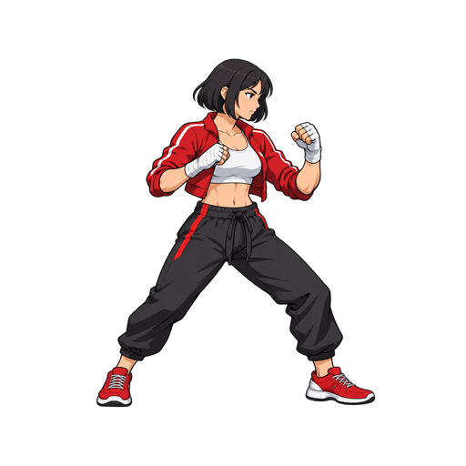
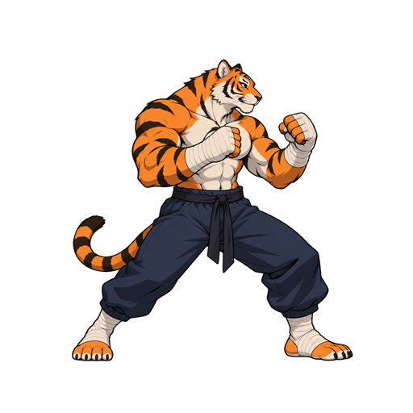
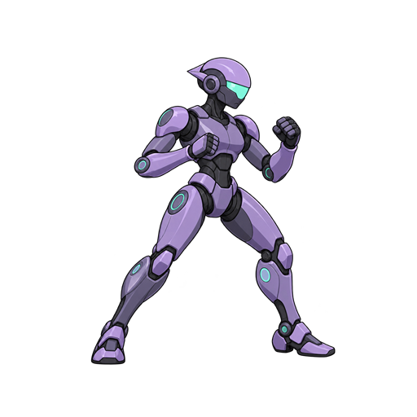

첫 3명 크기·발 위치 비교
1280×720 논리 무대 · 그림 표시 배율 0.625 · 발 기준점 (256,448) · 지면 y600



H1 · 현재 플레이 가능 B1 · 기준 시안 R3 · 기준 시안H1 인간
현재 게임 대기 그림. 보이는 머리~발 높이 384px(512 캔버스 기준).
B1 호랑이
주황 줄무늬·남색 바지·꼬리와 손발 붕대. 원본 보기

R3 로봇
보라 장갑·민트 바이저·어두운 관절. 원본 보기

흰 점은 발 기준점입니다. B1·R3는 정지 자세 한 장뿐이며, 이 화면은 선택 가능 상태나 판정·모션 품질의 승인이 아닙니다. 꼬리·장갑의 보이는 폭을 피격 범위로 자동 적용하지 않습니다.